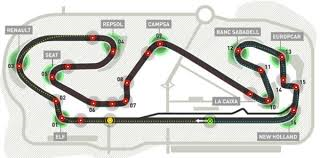

<!DOCTYPE html>
<html lang="en">
<head>
 <meta charset="UTF-8">
 <meta name="viewport" content="width=device-width, initial-scale=1.0">
 <meta http-equiv="X-UA-Compatible" content="ie=edge">
 <link rel="stylesheet" href="https://maxcdn.bootstrapcdn.com/bootstrap/4.0.0-beta.2/css/bootstrap.min.css" integrity="sha384-PsH8R72JQ3SOdhVi3uxftmaW6Vc51MKb0q5P2rRUpPvrszuE4W1povHYgTpBfshb"crossorigin="anonymous">
 <link href="https://maxcdn.bootstrapcdn.com/font-awesome/4.7.0/css/font-awesome.min.css" rel="stylesheet" integrity="sha384-wvfXpqpZZVQGK6TAh5PVlGOfQNHSoD2xbE+QkPxCAFlNEevoEH3Sl0sibVcOQVnN" crossorigin="anonymous">
 <link rel="stylesheet" href="Formula1home.css">
 <title>Formula1</title>
 <body>
    <script src="https://code.jquery.com/jquery-3.2.1.slim.min.js" integrity="sha384-KJ3o2DKtIkvYIK3UENzmM7KCkRr/rE9/Qpg6aAZGJwFDMVNA/GpGFF93hXpG5KkN"crossorigin="anonymous"></script>
    <script src="https://cdnjs.cloudflare.com/ajax/libs/popper.js/1.12.3/umd/popper.min.js"integrity="sha384-vFJXuSJphROIrBnz7yo7oB41mKfc8JzQZiCq4NCceLEaO4IHwicKwpJf9c9IpFgh"crossorigin="anonymous"></script>
    <script src="https://maxcdn.bootstrapcdn.com/bootstrap/4.0.0-beta.2/js/bootstrap.min.js" integrity="sha384-alpBpkh1PFOepccYVYDB4do5UnbKysX5WZXm3XxPqe5iKTfUKjNkCk9SaVuEZflJ"crossorigin="anonymous"></script>
    </body>
</html>
<html>
<body>
        <header>
                <div class="container">
                        <div class="row public-banner d-none d-md-flex px-3">
                                
                            </div>
                    <nav class="navbar navbar-expand-md navbar-light bg-light px-0">  
                        <button class="navbar-toggler" type="button"data-toggle="collapse" data-target="#navbarNavAltMarkup"aria-controls="navbarNavAltMarkup" aria-expanded="false"aria-label="Toggle navigation">
                            <span class="navbar-toggler-icon"></span>
                        </button>
                        <div class="collapse navbar-collapse" id="navbarNavAltMarkup">
                            <ul class="navbar-nav ml-auto">
                                <li class="nav-item active">
                                        <a href="Formula1.html" class="nav-link">Home</a>
                                    </li>
                                        <li class="divider py-2 d-none d-md-block cor-principal">/</li>
                                        <li class="nav-item">
                                        <a href="f1historia.html" class="nav-link">Historia</a>
                                    </li>
                                        <li class="divider py-2 d-none d-md-block cor-principal">/</li>
                                        <li class="nav-item">
                                        <a href="equipas.html" class="nav-link">Equipas</a>
                                    </li>
                                        <li class="divider py-2 d-none d-md-block cor-principal">/</li>
                                        <li class="nav-item pr-3">
                                        <a href="pilotos.html" class="nav-link">Pilotos</a>
                                    </li>
                                        <li class="divider py-2 d-none d-md-block cor-principal">/</li>
                                        <li class="nav-item pr-3">
                                        <a href="circuitos.html" class="nav-link">Circuitos</a>
                                    </li>
                                        <li class="divider py-2 d-none d-md-block cor-principal">/</li>
                                        <li class="nav-item pr-3">
                                        <a href="classificação.html" class="nav-link">Classificação</a>
                                    </li>
                                        <li class="divider py-2 d-none d-md-block cor-principal">/</li>
                                        <li class="nav-item pr-3">
                                        <a href="galeria.html" class="nav-link">Galéria</a>
                                    </li>
                            </ul>
                        </div>
                    </nav>
            </div>  
</header>
<header>
    <section class="flexcontainer">
            <div class="column" >
            <div class="painel4">
                <h3 class="painel_titulo4">Grande Prêmio da Austrália</h3>
                
                <p>Informações do circuito :</p>
                <ul>
                    <li>Nome: Circuito de Melbourne</li>
                    <li>Localização: Melbourne, Australia</li>
                    <li>Data: 26 de março</li>
                    <li>Voltas: 58</li>
                    <li>Percurso (1 volta): 5.303KM</li>
                    <li>Percurso total: 307.574KM</li>
                    <li>Curvas: 16</li>
                    <li>Primeiro ano: 1928</li>
                    <li>Anos disputados: 81</li>
                </ul>
            </div>
            <div class="painel4">
                <h3 class="painel_titulo4">Grande Prêmio do Bahrein</h3>
                
                <p>Informações do circuito :</p>
                <ul>
                    <li>Nome: Circuito de Banhrein</li>
                    <li>Localização: Sakhir, Bahrein</li>
                    <li>Data: 16 de abril</li>
                    <li>Voltas: 57</li>
                    <li>Percurso (1 volta): 5.412km</li>
                    <li>Percurso total: 308.228km</li>
                    <li>Curvas: 15</li>
                    <li>Primeiro ano: 2004</li>
                    <li>Anos disputados: 12</li>
                </ul>
           </div>
            <div class="painel4">
                <h3 class="painel_titulo4">Grande Prêmio da Espanha</h3>
                
                <p>Informações do circuito :</p>
                <ul>
                    <li>Nome: Circuito da Catalunya</li>
                    <li>Localização: Montmeló, Espanha</li>
                    <li>Data: 14 de maio</li>
                    <li>Voltas: 66</li>
                    <li>Percurso (1 volta): 4.655km</li>
                    <li>Percurso total: 307.104km</li>
                    <li>Curvas: 16</li>
                    <li>Primeiro ano: 1991</li>
                    <li>Anos disputados: 26</li>
                </ul>
            </div>
            <div class="painel4">
                    <h3 class="painel_titulo4">Grande Prêmio do Canadá</h3>
                    
                    <p>Informações do circuito :</p>
                    <ul>
                        <li>Nome: Circuito Gilles Villeneuve</li>
                        <li>Localização: Montreal-Quebec, Canadá</li>
                        <li>Data: 11 de junho</li>
                        <li>Voltas: 70</li>
                        <li>Percurso (1 volta): 4.361km</li>
                        <li>Percurso total: 305.270km</li>
                        <li>Curvas: 37</li>
                        <li>Primeiro ano: 1978</li>
                        <li>Anos disputados: 37</li>
                    </ul>
                </div>
                <div class="painel4">
                    <h3 class="painel_titulo4">Grande Prêmio da Áustria</h3>
                    
                    <p>Informações do circuito :</p>
                    <ul>
                        <li>Nome: Red Bull Ring</li>
                        <li>Localização: Spielberg-Estíria,Austria</li>
                        <li>Data: 9 de julho</li>
                        <li>Voltas: 71</li>
                        <li>Percurso (1 volta): 4.326km</li>
                        <li>Percurso total: 298.494</li>
                        <li>Curvas: 8</li>
                        <li>Primeiro ano: 1997</li>
                        <li>Anos disputados: 10</li>
                    </ul>
                </div>
                <div class="painel4">
                        <h3 class="painel_titulo4">Grande Prêmio da Hungria</h3>
                        
                        <p>Informações do circuito :</p>
                        <ul>
                            <li>Nome: Hungaroring</li>
                            <li>Localização: Mogyorod,Hungria</li>
                            <li>Data: 30 de julho</li>
                            <li>Voltas: 70</li>
                            <li>Percurso (1 volta): 4.381km</li>
                            <li>Percurso total: 306.630km</li>
                            <li>Curvas: 14</li>
                            <li>Primeiro ano: 1986</li>
                            <li>Anos disputados: 32</li>
                        </ul>
                </div>
                <div class="painel4">
                        <h3 class="painel_titulo4">Grande Prêmio da Itália</h3>
                        
                        <p>Informações do circuito :</p>
                        <ul>
                            <li>Nome: Circuito de Monza</li>
                            <li>Localização: Monza, Italia</li>
                            <li>Data: 3 de setembro</li>
                            <li>Voltas: 53</li>
                            <li>Percurso (1 volta): 5.193km</li>
                            <li>Percurso total: 308.238km</li>
                            <li>Curvas: 11</li>
                            <li>Primeiro ano: 1921</li>
                            <li>Anos disputados: 83</li>
                        </ul>
                    </div>
                    <div class="painel4">
                            <h3 class="painel_titulo4">Grande Prêmio da Malásia</h3>
                            
                            <p>Informações do circuito :</p>
                            <ul>
                                <li>Nome:  Circuito Sepag International</li>
                                <li>Localização: Sepag, Malásia</li>
                                <li>Data: 1 de outubro</li>
                                <li>Voltas: 56</li>
                                <li>Percurso (1 volta): 5.543km</li>
                                <li>Percurso total: 310.408km</li>
                                <li>Curvas: 16</li>
                                <li>Primeiro ano: 1999</li>
                                <li>Anos disputados: 18</li>
                            </ul>
                        </div>
                    <div class="painel4">
                        <h3 class="painel_titulo4">Grande Prêmio dos Estados Unidos</h3>
                        
                        <p>Informações do circuito :</p>
                        <ul>
                            <li>Nome: Circuito das Américas</li>
                            <li>Localização: Austin-Texas,Estados Unidos</li>
                            <li>Data: 22 de outubro</li>
                            <li>Voltas: 53</li>
                            <li>Percurso (1 volta): 5.513km</li>
                            <li>Percurso total: 308.405km</li>
                            <li>Curvas: 20</li>
                            <li>Primeiro ano: 2012</li>
                            <li>Anos disputados: 6</li>
                        </ul>
                    </div>
                    <div class="painel4">
                            <h3 class="painel_titulo4">Grande Prêmio do Brasil</h3>
                            
                            <p>Informações do circuito :</p>
                            <ul>
                                <li>Nome: Autódromo de Interlagos</li>
                                <li>Localização: Interlagos-São Paulo, Brasil</li>
                                <li>Data: 12 de novembro</li>
                                <li>Voltas: 71</li>
                                <li>Percurso (1 volta): 4.309km</li>
                                <li>Percurso total: 305.909km</li>
                                <li>Curvas: 15</li>
                                <li>Primeiro ano: 1972</li>
                                <li>Anos disputados: 35</li>
                            </ul>
                        </div>
        </div>
            <div class="column" >
            <div class="painel4">
                <h3 class="painel_titulo4">Grande Prêmio da China</h3>
                
                <p>Informações do circuito :</p>
                <ul>
                    <li>Nome:Circuito de Xangai</li>
                    <li>Localização: Xangai,Republica Popular da China</li>
                    <li>Data: 9 de abril</li>
                    <li>Voltas:56</li>
                    <li>Percurso (1 volta): 5.451km</li>
                    <li>Percurso total: 305.066km</li>
                    <li>Curvas: 16</li>
                    <li>Primeiro ano: 2004</li>
                    <li>Anos disputados: 13</li>
                </ul>
            </div>
            <div class="painel4">
                <h3 class="painel_titulo4">Grande Prêmio da Rússia</h3>
                
                <br>
                <p>Informações do circuito :</p>
                <ul>
                    <li>Nome: Autódromo de Sochi</li>
                    <li>Localização: Sochi, Krai de Krasnodar, Rússia</li>
                    <li>Data: 30 de abril</li>
                    <li>Voltas: 53</li>
                    <li>Percurso (1 volta): 5.853km</li>
                    <li>Percurso total: 309.732km</li>
                    <li>Curvas: 19</li>
                    <li>Primeiro ano: 2014</li>
                    <li>Anos disputados: 4</li>
                </ul>
            </div>
            <div class="painel4">
                    <h3 class="painel_titulo4">Grande Prêmio de Mônaco</h3>
                    
                    <p>Informações do circuito :</p>
                    <ul>
                        <li>Nome: Circuito de Monte Carlo</li>
                        <li>Localização: Monte Carlo, Monaco</li>
                        <li>Data: 28 de maio</li>
                        <li>Voltas: 78</li>
                        <li>Percurso (1 volta): 3.337km</li>
                        <li>Percurso total: 260.286km</li>
                        <li>Curvas: 19</li>
                        <li>Primeiro ano: 1929</li>
                        <li>Anos disputados: 74</li>
                    </ul>
                </div>
                <div class="painel4">
                        <h3 class="painel_titulo4">Grande Prêmio do Azerbaijão</h3>
                        
                        <p>Informações do circuito :</p>
                        <ul>
                            <li>Nome:Baku Street Circuit</li>
                            <li>Localização: Baku, Azerbaijão</li>
                            <li>Data: 25 de junho</li>
                            <li>Voltas: 51</li>
                            <li>Percurso (1 volta): 6.003km</li>
                            <li>Percurso total: 306.049km</li>
                            <li>Curvas: 20</li>
                            <li>Primeiro ano: 2016</li>
                            <li>Anos disputados: 2</li>
                        </ul>
                    </div>
                    <div class="painel4">
                        <h3 class="painel_titulo4">Grande Prêmio da Grã-Bretanha</h3>
                        
                        <p>Informações do circuito :</p>
                        <ul>
                            <li>Nome: Silverstone</li>
                            <li>Localização: Silverstone,Grã-Bretanha</li>
                            <li>Data: 16 de julho</li>
                            <li>Voltas: 52</li>
                            <li>Percurso (1 volta): 5.891km</li>
                            <li>Percurso total: 306.198</li>
                            <li>Curvas: 18</li>
                            <li>Primeiro ano: 1948</li>
                            <li>Anos disputados: 84</li>
                        </ul>
                    </div>
                    <div class="painel4">
                            <h3 class="painel_titulo4">Grande Prêmio da Bélgica</h3>
                            
                            <p>Informações do circuito :</p>
                            <ul>
                                <li>Nome: Spa-Francorchamps</li>
                                <li>Localização: Liege,Valônia,Belgica</li>
                                <li>Data: 27 de agosto</li>
                                <li>Voltas: 44</li>
                                <li>Percurso (1 volta): 7.004km</li>
                                <li>Percurso total: 308.052km</li>
                                <li>Curvas:20</li>
                                <li>Primeiro ano:1950</li>
                                <li>Anos disputados: 60</li>
                            </ul>
                    </div>
                    <div class="painel4">
                            <h3 class="painel_titulo4">Grande Prêmio de Singapura</h3>
                            
                            <p>Informações do circuito :</p>
                            <ul>
                                <li>Nome: Marina Bay</li>
                                <li>Localização: Marina Bay,Singapura</li>
                                <li>Data: 17 de setembro</li>
                                <li>Voltas: 61</li>
                                <li>Percurso (1 volta): 5.065km</li>
                                <li>Percurso total: 308.828km</li>
                                <li>Curvas: 23</li>
                                <li>Primeiro ano: 2008</li>
                                <li>Anos disputados: 9</li>
                            </ul>
                        </div>
                    <div class="painel4">
                            <h3 class="painel_titulo4">Grande Prêmio do Japão</h3>
                            
                            <p>Informações do circuito :</p>
                            <ul>
                                <li>Nome: Circuito de Suzuka</li>
                                <li>Localização: Suzuka, Japão</li>
                                <li>Data: 8 de outubro</li>
                                <li>Voltas: 53</li>
                                <li>Percurso (1 volta): 5.807km</li>
                                <li>Percurso total: 307.471</li>
                                <li>Curvas: 18</li>
                                <li>Primeiro ano: 1987</li>
                                <li>Anos disputados: 29</li>
                            </ul>
                        </div>
                        <div class="painel4">
                            <h3 class="painel_titulo4">Grande Prêmio do México</h3>
                            
                            <p>Informações do circuito :</p>
                            <ul>
                                <li>Nome: Hermano Rodriguez</li>
                                <li>Localização: Cidade do Mexico, Mexico</li>
                                <li>Data: 29 de outubro</li>
                                <li>Voltas: 71</li>
                                <li>Percurso (1 volta): 4.304km</li>
                                <li>Percurso total: 305.584km</li>
                                <li>Curvas:17</li>
                                <li>Primeiro ano: 1991</li>
                                <li>Anos disputados: 18</li>
                            </ul>
                            </ul>
                        </div>
                        <div class="painel4">
                                <h3 class="painel_titulo4">Grande Prêmio de Abu Dhabi</h3>
                                
                                <p>Informações do circuito :</p>
                                <ul>
                                    <li>Nome: Yas Marina</li>
                                    <li>Localização: Yas Island,Abu Dhabi</li>
                                    <li>Data: 26 de novembro</li>
                                    <li>Voltas: 55</li>
                                    <li>Percurso (1 volta): 5.554km</li>
                                    <li>Percurso total: 305.355km</li>
                                    <li>Curvas: 21</li>
                                    <li>Primeiro ano: 2008</li>
                                    <li>Anos disputados: 9</li>
                                </ul>
                            </div>
                        </div>
        </section>
</header>
<footer>
        <div class="container">
            <div class="col-lg-12 text-center">
                <h3>Formula1</h1>
                    <br>
                    <br>
                    <p>Telefone: +1 (877) 772-1518 </p>
                    <p>Email:   WebMaster@Formula1.com </p>
                    <br>
                    <div class="social-media">
                        <a href="https://pt-pt.facebook.com/Formula1">
                            <i class="fa fa-facebook"></i>
                        </a>
                        <a href="https://twitter.com/f1">
                            <i class="fa fa-twitter"></i>
                        </a>
                        <a href="https://br.pinterest.com/WD1987/formula-1">
                            <i class="fa fa-pinterest"></i>
                        </a>
                        <a href="https://www.instagram.com/f1">
                            <i class="fa fa-instagram"></i>
                        </a>
                        <a href="https://www.youtube.com/channel/UCB_qr75-ydFVKSF9Dmo6izg">
                            <i class="fa fa-youtube"></i>
                        </a>
                    </div>
                    <br>
                <p>&copy;2003-2018 Formula One World Championship Limited</p>
            </div>
        </div>
    </footer>  
 </body>
 </html>
